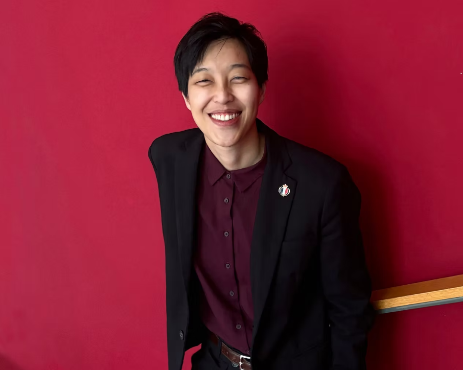

CONDUCTOR
Fang-Ju Kuo
Fang-Ju Kuo is a promising Taiwanese conductor. She is the Special Prize and Orchestra Prize winner of the 4th BMI International Bucharest Conducting Competition.
Kuo serves as Music Director of LeCheng Symphony Orchestra and the Hsinchu County Symphony Orchestra from Taiwan. She has also been invited multiple times to serve as a guest conductor in Milan. Recent engagements include conducting the Baltimore Symphony Orchestra, DUNA SZIMFONIKUS Orchestra, National Symphony Orchestra, and Taipei National University of the Arts Orchestra.
Kuo collaborated with Hsinchu County to plan plenty of charity events for students living in rural and mountain areas. She also conducts multiple high school wind ensembles in Taiwan, consistently achieving top honors at national competitions. In summer 2024, she led the Hsinchu County Symphony Orchestra on tour to Paris, promoting international music exchange opportunities for local musicians.
She is currently studying under the guidance of world-renowned conductor Marin Alsop and pursuing her Graduate Performance Diploma at the Peabody Institute of Johns Hopkins University.
"Creating a better world through the artistry of hands." – Fang-Ju Kuo
Awards and Positions
- Special Talent & Orchestra Prize - BMI Bucharest Competition 2022
- Music Director - LeCheng Symphony Orchestra
- Conductor - Hsinchu County Symphony Wind Band
- Music Director - Hsinchu County Youth Orchestra
- Conductor - Jhubei, Jhudong, National Hsinchu Industrial, and National Hsinchu Girls’ High School Bands
Contact
- Email:
- Hsinchu County Symphony Wind Orchestra:
- LeCheng Symphony Orchestra:
kfangju@gmail.com
hsinchusb@gmail.com
lechengsymphony@gmail.com